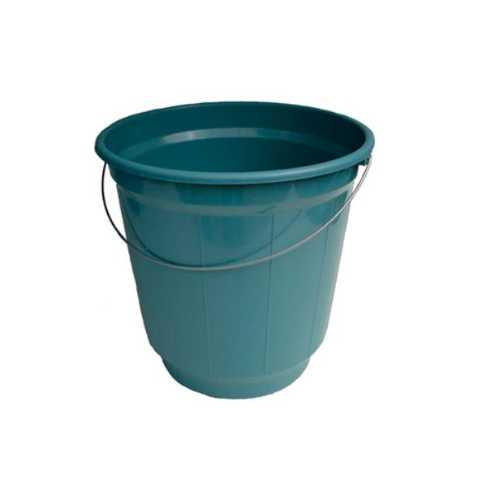

Bucket Sort
Para entendermos a ideia do bucket sort primeiro faremos uma viagem para o passado até o handout da Aula 9 onde analisamos o algorítimo quick sort, imagino que você lembre a ideia básica dele.
Para aqueles com a memória mais limitada, o quick sort se baseia em separar o vetor inicial em duas partes, após a escolha de um pivô, sendo uma parte maior a outra menor, com isso o algorítimo ordena as duas partes separadamente e junta elas tendo em vista que os valores de uma já são maiores que a outra.
Aqui esta o código do quick sort caso queira relembrar.
void quick_sort_r(int v[], int l, int r) {
if (l >= r) {
return;
}
int p = partition(v, l, r); //Separa
quick_sort_r(v, l, p - 1); //Ordena
quick_sort_r(v, p + 1, r); //Ordena
}
void quick_sort(int v[], int n) {
quick_sort_r(v, 0, n - 1);
}O problema do quick sort é acharmos o pivô que representa a mediana do vetor, pois não sabemos o intervalo dos nossos valores.
Mas e se soubéssemos qual esse intervalo? Por exemplo, nossos valores estão uniformemente destribuidos entre 0 e 1000.
Questão 1
O que parece ser uma boa suposição para dividir esses valores em maior e menor?
continuar ou terminar
Nesse caso fica fácil, pois podemos dividir nosso vetor no intervalo de até 500 e maiores que 500.
Porém raramente os dois intervalos teriam aproximadamente o mesmo número de elementos, na maioria dos casos um intervalo teria mais elementos que o outro, podendo até mesmo ter todos os elementos do vetor original. O que só nós prejudicaria pois acabariamos com o mesmo problema que tentamos resolver.
Mas e se ao invés de dividir em 2 partes quiséssemos dividir em 10 ou mais?
Consegue ver onde quero chegar?
Essa é basicamente a ideia do bucket sort. Uma vez que sabemos que nossos valores estão distribuídos em um intervalo, podemos usar o conceito de dividi-lo em pedaços menores e ordenar esses pedaços separadamente, tendos os pedaços menores já ordenados, podemos junta-los e obter nosso produto final.
Chamaremos esses pedaços menores de buckets, pois são como baldes onde inserimos apenas os valores que estão dentro de cada respectivo intervalo.
Questão 2
Para que o bucket sort seja eficiante, gostariamos de garantir que nossos elementos estejão divididos uniformemente em varios buckets.
Para que o fato citado anteriormente seja valido, seria bom que você tentasse pensar em quantos buckets seria posivel sub-dividir um vetor de tamanho 6 com valores de 0 até 999 e qual seria a regra(intervalo) parece fazer sentido para cada buckets.
Dica use um vetor real, por exemplo: v = {50, 455, 578, 735, 109, 436}
continuar ou terminar
Como você pode notar existem infinitas regras para sub-dividir esse vetor. Portanto precisamos definir apenas qual regra vamos utilizar para cada bucket. Para isso primeiramente temos que tomar em conta o intervalo dos valores do vetor original.
Por exemplo vamos levar em conta o vetor da Questão 2
v = {50, 455, 578, 735, 109, 436}Considerando que temos um intervalo de 0 a 999 uma das soluções seria dividir cada bucket em intervalos de centenas e para que tenhamos todos os intervalos das centenas ([0, 99], [100, 199], [200, 299], ..., [900, 999]) precisaríamos de 10 buckets.
Escolhemos separar os buckets em centenas apenas para facilitar o entendimento do algoritimo. Cabe lembrar que essa é uma escolha de quem esta implementando o codigo. Mais pra frente veremos o impacto dessa escolha na complexidade, mas por enquanto SEM SPOILERS
Questão 3
Agora que temos 10 buckets, podemos fazer um vetor de buckets dessa forma cada valor do nosso vetor de buckets será uma lista apenas com valores com o mesmo valor na casa da centena.
Para facilitar o código criaremos um struct chamado int_bucket que contem o numero de elementos (size) dentro dele e um ponteiro para os valores (*data):
typedef struct
{
int size;
int *data;
} int_bucketTente criar um pseudo-código que cria um vetor de buckets (usando int_bucket) e separa os valores do vetor original nesses buckets.
continuar ou terminar
cria um vetor de int_bucket do tamanho do número de buckets
Para um i de 0 até numero de buckets - 1, iterando de 1 em 1:
Define o tamanho do buckets[i] = 0;
Aloca memoria para o buckets[i];
//Sendo n o tamanho do vetor original
Para um j de 0 até n - 1, iterando de 1 em 1:
Pega a o numero mais a esquerda (centena) do valor atual;
Insere o valor no bucket correto;
Aumenta o tamanho do bucket;Podemos traduzir isso para C da seguinte maneira:
#define bucket_numbers 10
typedef struct
{
int size;
int *data;
} int_bucket;
void create_buckets(int_bucket *buckets, int n)
{
for (int bucket_index = 0; bucket_index < bucket_numbers; bucket_index++)
{
buckets[bucket_index].size = 0;
buckets[bucket_index].data = (int *)malloc(sizeof(int) * n);
}
}
void buckets_partition(int v[], int n, int_bucket buckets[])
{
for (int v_index = 0; v_index < n; v_index++)
{
int bucket_index = v[v_index] / 100; //INDEX == CENTENA
buckets[bucket_index].data[buckets[bucket_index].size] = v[v_index]; //ADD O VALOR NO BUCKET
buckets[bucket_index].size++; //AUMENTA TAMANHO
}
}
void bucket_sort(int v[], int n)
{
int_bucket buckets[bucket_numbers];
//Cria Bucket
create_buckets(buckets, n);
//Separa em buckets
buckets_partition(v, n, buckets);
}Se rodarmos esse código com nosso vetor V teremos buckets exatamente assim:
Bucket [0,99]: {50} // 0
Bucket [100,199]: {109} // 1
Bucket [200,299]: {} // 2
Bucket [300,399]: {} // 3
Bucket [400,499]: {455, 436} // 4
Bucket [500,599]: {578} // 5
Bucket [600,699]: {} // 6
Bucket [700,799]: {735} // 7
Bucket [800,899]: {} // 8
Bucket [900,999]: {} // 9Agora que temos os buckets quase prontos, podemos notar que o Bucket[400, 499] não esta ordenado! Ou seja não podemos apenas juntar todos eles.
Questão 4
Será necessário a utilização de um método de ordenação para cada bucket podendo ser o mesmo para todos ou um para cada. Isso significa que dependendo da característica do nosso bucket a ser ordenado podemos optar por uma ou outra ordenação.
Nesse handout vamos utilizar um mesmo algorítimo de ordenação, que já aprendemos, para todos os buckets.
Olhe a tabela de ordenação e determine qual algorítimo é melhor para esta tarefa.
Dica: Se ultilizado eficientemente, o bucket sort gera apenas buckets pequenos.
continuar ou terminar
Esperamos que você tenha escolhido utilizar o Insertion Sort para essa tarefa, tendo em vista que em uma situação de utilização eficiente do algorítimo teremos, na maioria das vezes, buckets pequenos (ridículos ou pequenos como na tabela). Com isso o insertion sort é perfeito para a nossa implementação, abaixo temos o código dele para você dar uma refrescada na mente.
void insertion_sort(int v[], int n)
{
for (int i = 1; i < n; i++)
{
int temp = v[i];
int h = i;
while (h > 0 && temp < v[h - 1])
{
v[h] = v[h - 1];
h--;
}
v[h] = temp;
}
}Com o algorítimo definido faremos nossa função de ordenação que sera chamada a cada bucket.
void sort(int *v, int_bucket buckets[]){
int v_index = 0;
for (int bucket_index = 0; bucket_index < bucket_numbers; bucket_index++)
{
insertion_sort(buckets[bucket_index].data, buckets[bucket_index].size);
}
}Agora que temos todos os buckets ordenados podemos finalmente juntar-los em um vetor novamente. Essa implementação é muito simples por isso não vou pedir para você fazer nada, basta usar essa função combine.
void combine(int *v, int_bucket buckets[], int v_index, int bucket_index)
{
for (int data_index = 0; data_index < buckets[bucket_index].size; data_index++)
v[v_index + data_index] = buckets[bucket_index].data[data_index];
}
void sort(int *v, int_bucket buckets[]){
int v_index = 0;
for (int bucket_index = 0; bucket_index < bucket_numbers; bucket_index++)
{
if (buckets[bucket_index].size) //Verifica se o bucket esta vazio
{
insertion_sort(buckets[bucket_index].data, buckets[bucket_index].size); //ORDENA
combine(v, buckets, v_index, bucket_index); //Adiciona ao vetor oririnal
v_index += buckets[bucket_index].size;
}
free(buckets[bucket_index].data);
}
}
void bucket_sort(int v[], int n)
{
int_bucket buckets[bucket_numbers];
//Cria Bucket
create_buckets(buckets, n);
//Separa em buckets
buckets_partition(v, n, buckets);
//Ordena e combina
sort(v, buckets)
}Muita calma nessa hora, sem fechar a aba ainda. Como de costume ainda falta uma parte essencial do handout, a tão adorada análise de complexidade!
Para entender o funcionamento da complexidade deste método, iremos começar com o entendimento de três partes cruciais para o método em questão, sendo elas:
1 - Análise do tempo de execução para distribuição do vetor de entrada em buckets.
2 - Análise do tempo de execução para ordenação de cada bucket.
3 - Análise do tempo da concatenação dos buckets de volta para o vetor.
Em nossa análise, consideraremos 2 parâmetros, n ( número de elementos ) e k (numero de buckets ).
Questão 5.a
Vamos começar pela parte 1 e 3
Qual você julga que é a complexidade do bucket sort quando se diz a respeito de organizar a entrada em diferentes buckets e concatena-los de volta em um vetor?
continuar ou terminar
Não nos leva muito tempo até entender que será uma complexidade de O(n) para organizar a entrada em buckets, tendo em vista que todos os elementos do vetor devem ser percorridos.
Já para juntar os buckets de volta em um vetor seria O(k), tendo em vista que todos os buckets devem ser percorridos. Com isso percebemos que a primeira e terceira parte do algorítimo são lineares.
Entretanto, falta uma parte crucial da análise de complexidade que é obviamente a de ordenação. Tendo em vista que esta parte depende principalmente do algorítimo de Insertion Sort de uma revisada na complexidade do algorítimo na tabela de ordenação.
Primeiramente vamos analisar o caso ideal do bucket sort, esse que corresponde ao caso dos elementos estarem uniformemente distribuídos e todos os buckets estarem ordenados, isso faz com que a complexidade do insertion sort seja O(n), porém como temos buckets uniformemente distribuídos pelos buckets temos a complexidade sendo O(1*k).
Assim temos a complexidade de organizar os buckets O(n) mais a complexidade do insertion sort passando pelos buckets ordenados que seria O(k) mais a complexidade da concatenação final que também é O(k), resultando, portanto, em uma complexidade do melhor caso em O(n + 2*k), no entanto, pela regra de simplificação temos a complexidade do melhor caso sendo O(n + k).
Questão 5.b
Agora que já analisamos o melhor caso, tente descobrir qual seria o pior caso do bucket sort em termos de complexidade temporal.
continuar ou terminar
Com a noção de que o melhor caso é quando os buckets estão uniformemente distribuídos e ordenados, você deve ter adivinhado que o pior caso seria quando todos os elementos do vetor estiverem em um curto intervalo, assim sendo colocados todos no mesmo bucket e desordenados.
Com a necessidade de ordenar o bucket temos a complexidade do insertion sort sendo O(n²), mais a complexidade de organizar os buckets O(n) e mais a complexidade de concatenar os buckets em um vetor O(k) ou seja O(n² + n + k), no entanto, pela regra de simplificação temos a complexidade do pior caso sendo O(n²).
Por ultimo vamos discorrer a complexidade do caso médio do bucket sort, ou seja, quando os valores estão distribuídos em buckets mas não necessariamente ordenados dentro deles. Primeiramente temos que levar em conta obviamente como os outros casos a complexidade das partes 1 e 3 sendo elas respectivamente O(n) e O(k).
Questão 5.c
Qual a complexidade de ordenar 1 bucket no caso médio?
Dica: A complexidade de ordenar um vetor com n termos com o Insertion sort é O(n²).
continuar ou terminar
Como com o bucket sort temos n termos divididos em k buckets é intuitivo dizer que a complexidade de ordenar cada bucket seria \(\ 0(\frac{n}{k}²)\) , assim como temos k buckets para ordenar temos a complexidade para ordenar cada bucket sendo \(\ 0(\frac{n²}{k})\). Assim temos a complexidade final sendo \(\ 0(\frac{n²}{k})\) + O(n) + O(k), ou seja \(\ 0(\frac{n²}{k} + n + k)\).
De tal forma que seria possível concluirmos o fato, de que o bucket sort não é um algoritmo aplicável para qualquer vetor, dado que para uma operação otimizada do bucket sort os buckets devem ser arranjados de forma eficiente e os elementos devem estar, mais ou menos, uniformemente distribuídos. Como é possível notar o bucket sort tem uma aplicação especifica no mundo de algorítimos de ordenação, no entanto existem casos específicos em que ele é extremamente benéfico.
Um exemplo claro em que ele é eficiente é quando existe a necessidade de ordenar listas gigantescas, as quais qualquer algorítimo teria problemas em termos de memória, nestes casos o bucket sort pode ser utilizado de modo que os buckets sejam separados em arquivos separados e ordenados separadamente.
That's all folks

Extra:
Disponibilizamos o código fonte para que você possa brincar.